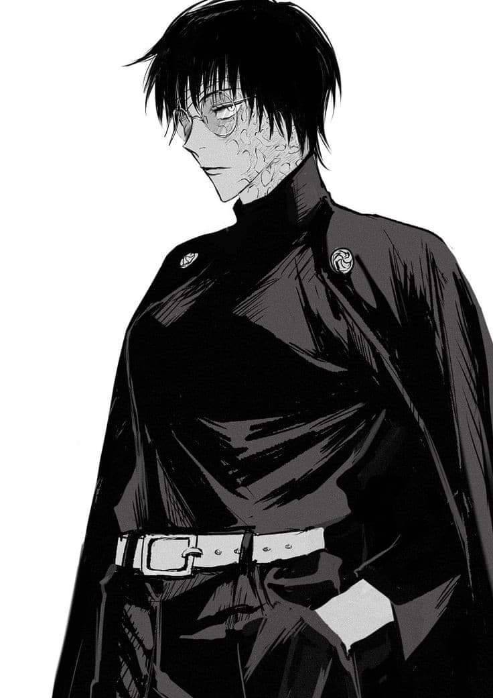
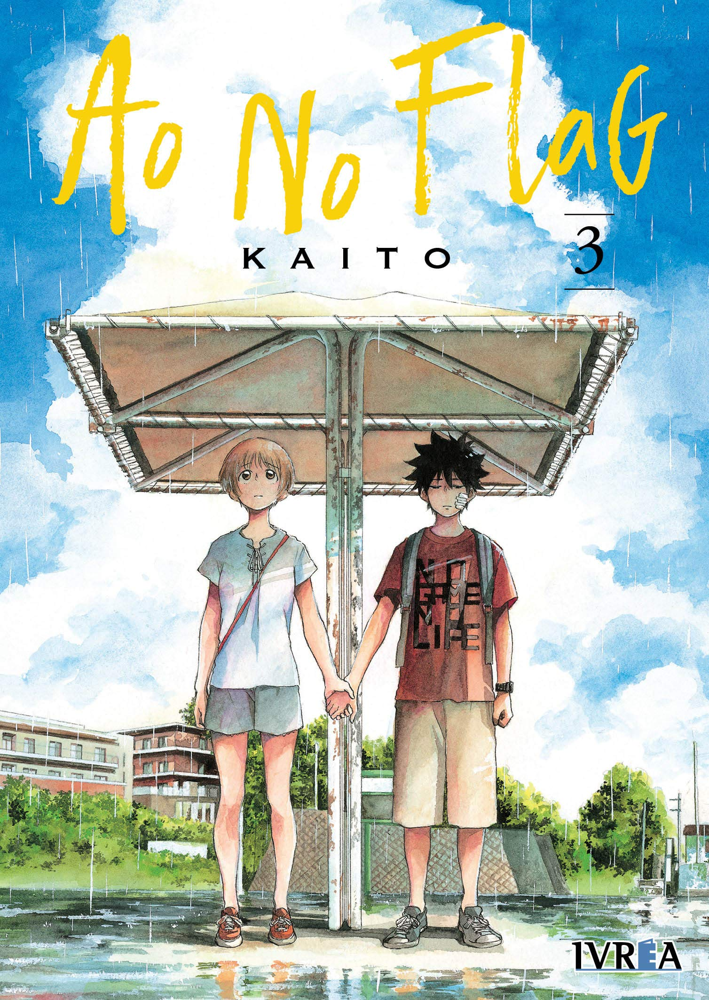

Jujutsu Kaisen |
Jujutsu Kaisen é uma série mangá japonês escrito e ilustrado por Gege Akutami desde 2018. Ela segue a história do protagonista Itadori Yuuji enquanto ele tenta coletar todas partes de uma maldição para aniquilar-la. Ele encontra uma pequena família na Escola Ténica de Jujutsu em Tokyo e mais um tempo de vida.
Minhas músicas favoritas são:
- Fushiguro Megumi
- Gojo Satoru
- Zen'in Maki
|
|
|
 |
One Piece |
One Piece é provavalmente o mangá e anime mais bem sucedido e conhecido do mundo. Ele é serializado desde 1997 e até hoje compilou mais de 100 volumes. Escrito e ilustrado por Eiichiro Oda, One Piece segue a história de Luffy um pirata e sua tripulação em busca do One Piece e o título de Rei dos Piratas.
Meus personagens favoritos são:
- Monkey D. Luffy
- Trafalgar D. Law
- Nico Robin
|
|
|
|
Ao no Flag |
Ao no Flag é uma série de mangá japonês que foi serializada na Shounen Jump+ de 2017 até 2020. Ela segue a história de Taichi Ichinose e sua jornada pelo ensino médio. Ao no Flag foi escrito e ilustrado por KAITO.
Meus personagens favoritos são:
- Mami Yagihara
- Taichi Ichinose
- Futaba Kuze
- Touma Mita
|
 |
|
Demon Slayer |
Demon Slayer é uma série da mangá escrita e ilustrada por Koyoharu Gotouge. Ela segue a história do jovem Tanjirou depois de sua familia ser morta por um oni e sua irmã virar uma, ela mesma. A gente encontra outros personagens como o menino javali Inosuke e o medroso Zenitsu nessa jornada de vingança e adaptação.
Meus personagens favoritos são:
- Kamado Tanjirou
- Tomioka Giyuu
- Kochou Shinobu
|
|
|
 |